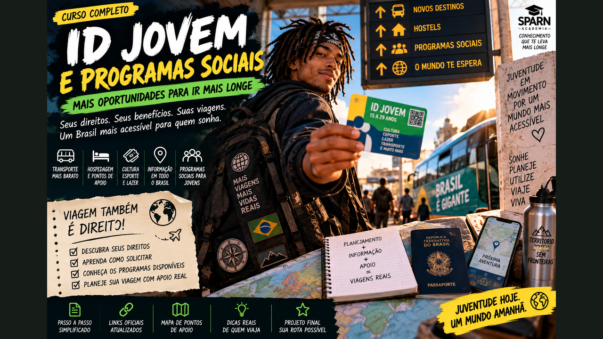

Direitos, Apoios e Mochilão Possível — ID Jovem, passagem interestadual, cultura, CadÚnico, pontos de apoio e links oficiais para planejar melhor.
6 módulos24 aulasProjeto Minha Rota com Direitos
0 de 24 aulas concluídas
Informação também leva você mais longe
Este curso ensina a usar direitos e serviços públicos sem prometer o que eles não oferecem. Você vai entender a ID Jovem, planejar passagens, identificar redes de apoio e construir um mochilão com plano B, documentação e fontes oficiais.

01
ID Jovem: o direito antes da viagem
Entenda quem pode usar, como emitir e por que informação oficial é o primeiro ponto de apoio.
Aula 01
O que é a ID Jovem
A Identidade Jovem é um documento gratuito e virtual para jovens de baixa renda. Entre seus benefícios estão meia-entrada em eventos artístico-culturais e esportivos e vagas gratuitas ou com desconto no transporte coletivo interestadual, conforme as regras vigentes.
Ela não é uma promoção de empresa de ônibus: é uma política pública ligada aos direitos previstos para a juventude. Por isso, conhecer a regra ajuda o jovem a planejar sem depender de boatos de redes sociais.
Atividade prática
Abra a página oficial da ID Jovem e anote os benefícios que seriam úteis em uma viagem.
Aula 02
Quem pode ter
Atualmente, o serviço oficial informa idade entre 15 e 29 anos, renda familiar mensal de até dois salários mínimos e inscrição no Cadastro Único com dados atualizados nos últimos 24 meses. Não é necessário ser estudante.
Os critérios podem ser atualizados. Antes de montar uma viagem baseada no benefício, confirme sua situação e as regras na fonte oficial.
Atividade prática
Faça um checklist: idade, CadÚnico atualizado, renda familiar e documento de identificação.
Aula 03
CadÚnico e CRAS
Quem precisa se inscrever ou atualizar informações no Cadastro Único deve procurar o CRAS ou o setor responsável pelo CadÚnico no município. O atendimento pode solicitar documentos e comprovantes conforme a situação da família.
O CRAS não é hospedagem de mochileiro: é uma unidade pública de assistência social. Neste curso ele aparece como ponto de orientação sobre CadÚnico e serviços socioassistenciais, não como estrutura turística.
Atividade prática
Localize o CRAS ou setor do CadÚnico da sua cidade e salve o endereço.
Aula 04
Emitindo e conferindo a carteira
A emissão pode ser feita pelos canais oficiais da ID Jovem. Hoje o portal informa que CPF pode ser usado para acesso ao benefício e que o NIS continua aceito em determinadas situações.
Antes da viagem, confira validade e funcionamento da carteira. Salve também o caminho oficial para reemitir ou consultar, em vez de depender apenas de captura de tela antiga.
Atividade prática
Acesse o emissor oficial e registre onde você consultará sua carteira antes da partida.
Ferramenta do módulo — atualize seu Caderno de Direitos na Estrada com documentos, contatos, benefícios e plano B.
02
Passagem interestadual na prática
Aprenda a transformar o benefício em bilhete sem confundir gratuidade com passagem ilimitada.
Aula 05
Duas gratuitas e duas com desconto
Nas linhas regulares de serviço convencional abrangidas pela regra, a ANTT informa duas vagas gratuitas e duas vagas com desconto mínimo de 50% por veículo para jovens elegíveis. O benefício não significa que qualquer assento de qualquer categoria será gratuito.
A disponibilidade deve ser verificada para a viagem desejada. Pedágio, uso de terminal e alimentação não estão cobertos pelo benefício tarifário informado pela ANTT.
Atividade prática
Escolha uma rota interestadual e identifique quais serviços convencionais existem.
Aula 06
A regra das três horas
A ANTT orienta solicitar o Bilhete de Viagem do Jovem com no mínimo três horas de antecedência. Quando possível, também pode ser solicitado o retorno.
Depois desse prazo, assentos não emitidos podem ser comercializados, embora continuem disponíveis ao beneficiário enquanto não tiverem sido vendidos. Para uma viagem importante, não deixe a solicitação para o último minuto.
Atividade prática
Crie uma linha do tempo do embarque começando quatro horas antes da partida.
Aula 07
Documento e embarque
Para usar o benefício, leve ID Jovem válida e documento oficial com foto. O bilhete é pessoal e intransferível.
Jovens menores de 16 anos precisam observar regras específicas para viajar desacompanhados fora da comarca de residência. Se esse for seu caso, consulte as orientações atuais antes de comprar ou sair de casa.
Atividade prática
Monte sua pasta de viagem com documento, ID Jovem, bilhete e contatos.
Aula 08
Se o benefício for recusado
A ANTT orienta que, diante de recusa, o jovem solicite à empresa documento com data, hora, local e motivo da negativa. Depois, pode registrar manifestação nos canais de Ouvidoria da Agência.
Evite transformar o balcão em confronto. Registre os fatos, preserve comprovantes e use os canais formais.
Atividade prática
Salve o telefone 166 e o endereço da página de benefícios tarifários da ANTT.
Ferramenta do módulo — atualize seu Caderno de Direitos na Estrada com documentos, contatos, benefícios e plano B.
03
Cultura, esporte e cidade
Use a ID Jovem também para ampliar o que você consegue viver no destino.
Aula 09
Meia-entrada
A ID Jovem dá acesso a meia-entrada em eventos artístico-culturais e esportivos para quem atende aos requisitos. Isso pode incluir experiências que normalmente seriam cortadas de um orçamento apertado.
Confirme regras do evento e leve a documentação necessária. Benefício público não elimina lotação, horário ou necessidade de ingresso.
Atividade prática
Pesquise três experiências culturais no seu próximo destino e verifique como funciona a meia-entrada.
Aula 10
Roteiro cultural econômico
Museus, centros culturais, bibliotecas, parques e programações públicas podem formar dias inteiros de baixo custo. Combine essas opções com atividades em que a ID Jovem reduz o ingresso.
Planejar cultura antes de viajar ajuda a não gastar apenas no que aparece primeiro ao turista.
Atividade prática
Monte um dia cultural com uma atividade gratuita e uma com meia-entrada.
Aula 11
Juventude e território
Casas, centros e secretarias de juventude podem oferecer atividades, formação e informação local, mas serviços variam muito entre municípios. Nunca presuma que existe hospedagem, alimentação ou benefício turístico.
Pesquise a prefeitura e os canais oficiais do município. Um equipamento público é ponto de informação quando sua função realmente inclui esse atendimento.
Atividade prática
Localize o órgão de juventude de um destino e anote quais serviços ele declara oferecer.
Aula 12
Eventos como parte da rota
Festivais, feiras, jogos e atividades culturais podem justificar uma viagem, mas datas e condições mudam. Use agenda oficial e evite construir todo o orçamento sobre evento ainda não confirmado.
Considere transporte de volta, horário de término e localização antes de comprar ingresso.
Atividade prática
Escolha um evento e calcule seu custo completo: ingresso, ida, volta e alimentação.
Ferramenta do módulo — atualize seu Caderno de Direitos na Estrada com documentos, contatos, benefícios e plano B.
04
Rede de apoio: saiba onde procurar
Diferencie apoio real de expectativa: cada serviço público tem função, público e regra próprios.
Aula 13
CRAS e assistência social
O CRAS é porta de entrada da proteção social básica do SUAS e pode orientar famílias e indivíduos sobre serviços e benefícios conforme a situação. Ele não deve ser tratado como hostel, guarda-volumes ou ponto turístico.
Se durante uma viagem houver vulnerabilidade social real, procure a rede socioassistencial do município para orientação adequada.
Atividade prática
Pesquise o endereço oficial de um CRAS no destino e registre apenas como referência de assistência social.
Aula 14
Saúde pública
Em necessidade de saúde, procure a rede adequada à gravidade e à oferta local. Para urgências, o SAMU atende pelo 192 onde o serviço está disponível; emergências também podem envolver unidades de pronto atendimento e hospitais conforme a rede local.
Antes de viajar, descubra onde estão os serviços públicos próximos ao seu roteiro. Em emergência grave, priorize atendimento, não o cronograma da viagem.
Atividade prática
Salve 192 e localize uma unidade pública de atendimento no destino.
Aula 15
Terminais e postos de informação
Rodoviárias, aeroportos e terminais podem possuir balcões de empresa, administração, segurança e informações. Nos principais terminais também podem existir pontos de atendimento ou fiscalização, mas isso não deve ser presumido em toda cidade.
Ao chegar, identifique saída segura, transporte local e canais oficiais. Informação confiável reduz decisões improvisadas.
Atividade prática
Faça um mapa de chegada com terminal, hospedagem e transporte urbano.
Aula 16
Defesa de direitos
Para transporte interestadual rodoviário, a ANTT mantém Ouvidoria e canais de atendimento. Para outros problemas de consumo, plataformas públicas e órgãos de defesa do consumidor podem ser úteis conforme o caso.
Guarde protocolos, fotos de painéis, bilhetes e comunicações. Um relato objetivo e documentado facilita a análise.
Atividade prática
Crie uma pasta digital chamada 'Comprovantes da viagem'.
Ferramenta do módulo — atualize seu Caderno de Direitos na Estrada com documentos, contatos, benefícios e plano B.
05
Outros programas e oportunidades
Aprenda a pesquisar benefícios sem cair na armadilha de achar que todo programa social financia turismo.
Aula 17
CadÚnico é uma porta, não um pacote de viagem
O Cadastro Único identifica famílias de baixa renda para diversos programas, mas cada política tem critérios próprios. Estar cadastrado não significa automaticamente receber todos os benefícios.
Para mochilão, use o CadÚnico principalmente como requisito quando a política explicitamente o exigir, como ocorre com a ID Jovem.
Atividade prática
Liste benefícios que você conhece e marque quais realmente confirmou em fonte oficial.
Aula 18
Passe Livre não é ID Jovem
O Passe Livre Interestadual é outro benefício, destinado a pessoas com deficiência comprovadamente carentes que atendam às regras do programa. Não deve ser apresentado como extensão automática da ID Jovem.
Conhecer políticas diferentes evita desinformação e ajuda cada pessoa a buscar o direito correspondente à própria situação.
Atividade prática
Escreva em uma frase a diferença entre ID Jovem e Passe Livre.
Aula 19
Programas municipais mudam
Municípios e estados podem ter passes, restaurantes populares, centros de juventude, programas culturais e outras iniciativas. Eles não são uniformes no Brasil e podem mudar de gestão para gestão.
Pesquise sempre no portal oficial do destino, usando termos como juventude, assistência social, cultura, transporte e segurança alimentar.
Atividade prática
Pesquise dois programas locais de um destino e registre fonte, público e regra.
Aula 20
Voluntariado não é benefício social
Trocas de trabalho por hospedagem e programas de voluntariado pertencem a outra lógica e podem envolver riscos, contratos ou regras próprias. Não confunda isso com direitos públicos garantidos.
Avalie reputação, tarefas, carga horária, segurança e condições antes de aceitar qualquer troca. Programas sociais não devem ser usados como promessa de turismo gratuito.
Atividade prática
Crie cinco perguntas que faria antes de aceitar uma oportunidade de voluntariado.
Ferramenta do módulo — atualize seu Caderno de Direitos na Estrada com documentos, contatos, benefícios e plano B.
06
Projeto: Minha Rota com Direitos
Monte um mochilão possível usando benefícios confirmados, pontos de apoio reais e plano B.
Aula 21
Escolha uma rota elegível
Defina origem, destino e datas. Verifique se o deslocamento é interestadual e quais opções convencionais aparecem nos canais de transporte.
Não compre hospedagem não reembolsável antes de confirmar a passagem quando seu orçamento depende da gratuidade.
Atividade prática
Desenhe uma rota principal e uma alternativa.
Aula 22
Mapa de apoios
Marque terminal, hospedagem, unidade de saúde, órgão de juventude quando houver, CRAS como referência socioassistencial e contatos de emergência. Só inclua serviços cuja existência foi confirmada.
Um ponto no mapa não significa que ele oferece qualquer tipo de assistência: registre exatamente a função declarada.
Atividade prática
Monte seu mapa com nome, endereço, horário e função de cada ponto.
Aula 23
Orçamento com e sem benefício
Faça duas contas: uma supondo que consiga a vaga gratuita ou descontada e outra pagando transporte normal. Isso protege sua viagem caso a vaga desejada não esteja disponível.
Inclua taxas não cobertas, alimentação, transporte urbano, hospedagem e reserva de emergência.
Atividade prática
Calcule os dois cenários e descubra quanto de reserva precisa.
Aula 24
Checklist de direitos e partida
Revise ID Jovem, documento, antecedência do bilhete, regras para menores quando aplicável, comprovantes, telefones e links oficiais. Atualize tudo perto da data.
O objetivo do curso não é prometer viagem grátis: é mostrar como informação pública pode transformar direitos existentes em mobilidade real e responsável.
Atividade prática
Finalize sua Rota com Direitos e salve uma cópia offline do plano.
Ferramenta do módulo — atualize seu Caderno de Direitos na Estrada com documentos, contatos, benefícios e plano B.
🧭 Central de Links Úteis
Salve esta área. Regras e programas podem mudar; por isso o curso prioriza canais públicos e páginas oficiais.